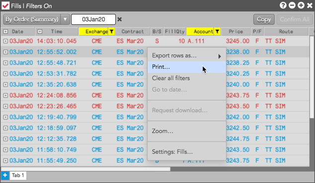

Select Print from the right-click context menu to print fills from the Fills widget. Fills are printed based on the filtered content of the widget, and not what fills are manually selected.
For example, if you are viewing fills in "By Order (Summary)" mode and the widget is filtered by "CME" and account "A.111", then only those fills displayed in the widget will be printed.
Tip: You can also print from the Fills pane of the Orders and Fills widget.
